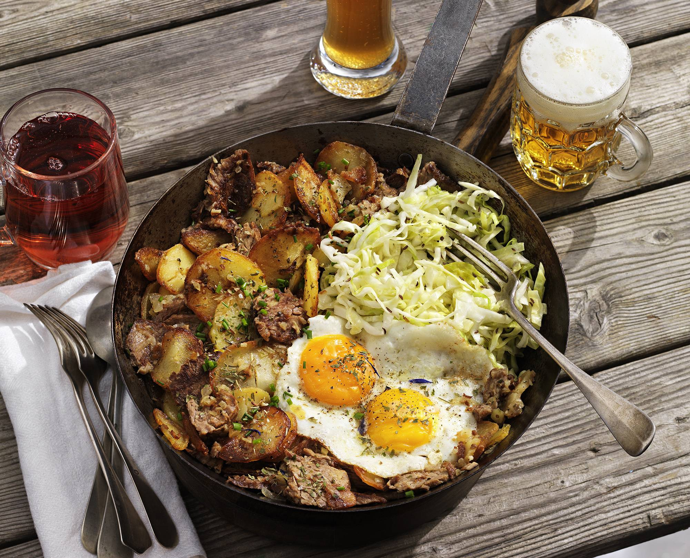

Simple to prepare, with ingredients that most people have in their pantry, Tiroler gröstl is a dish that can be hard to mess up. It is made with potatoes, boiled beef, bacon (Tyrolean speck), onions, butter or oil, eggs, and spices. The potatoes are cooked, then sautéed with browned beef, bacon, and onions and seasoned with spices.
Meal prep time : 30 minutes
Servings : 4